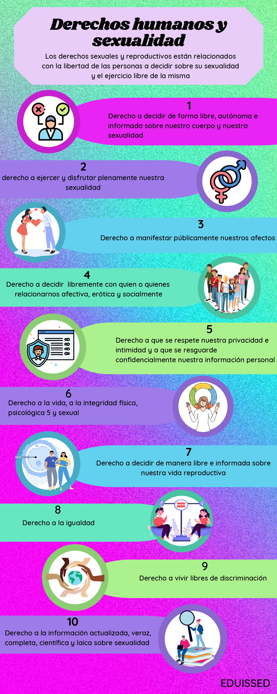

What is SEXi?

Currently, teaching and learning strategies developed by the educational system through teachers are often repetitive and boring for students, which causes them to lose interest in performing activities and, as a consequence, the expected learning and understanding of the topics are not achieved.
That is why we, EDUISSED (Integral Socioemotional Education in Digitalized Sexuality), decided to design SEXi (Integral Sexuality), a technopedagogical tool, specifically a website, which aims to contribute to the acquisition of socioemotional skills in sexuality. What makes it different and more attractive is that it includes augmented reality to facilitate learning and, at the same time, make it more didactic and interesting for students.
It is important to use interactive methodologies that stimulate active participation, and not just transmit information, but also acquire socioemotional skills in sexuality.
Our work is based mainly on the information and topics provided by UNESCO, so it is recommended to review the links and references.
Learn
Below we present a series of articles and interactive presentations that will allow you to acquire more knowledge on these topics.
Choose one of these!
Conoce los increíbles juegos con los cuales podrás aprender aún más.
Resources
Here we leave you a list of all the QR codes that you can find on the page, as well as the infographics for each topic. You can download them from here or by clicking on each of the images while viewing them. Have fun!
Markers


Infographics

Types of Violence 1/2

Types of Violence 2/2

Everyday examples of types of violence

Gender Stereotypes

Decision Making

Puberty

Contraceptive Methods

Human Rights and Sexuality

Types of Families

Use of ICTs

References
The list of links used to create this project
- UNAM Bulletin
- Hopkin Families
- All About Sex and Gender
- Sex and Gender: Government
- CNDH Tolerance
- BUAP Repository: Sexual Behavior
- DGDC UNAM
- Sexual Education UChile
- Sanitas: Sexual Life
- ConstruyeT SEP
- Gender Roles
- InMujeres
- CONAVIM: Gender Stereotypes
- WHO: Gender
- Gender Roles and Identity
- Family: The Basis of Society
- OHCHR: Gender Stereotyping
- UNICEF: Gender Equality
- Government Women
- UNWomen: Women's Leadership
- CNDH: Family and Sexual Violence
- Bullying and Privacy
- UNICEF: Gender Violence
- Glossary: Sexual Violence
- México Evalua: Growing Figure of Sexual Violence
- Sexual Consent
- UNWomen: Consent
- UNICEF: FAQs on Exploitation and Abuse
- Senate Government: Child Exploitation
- El Financiero: Women's Exploitation
- Video: Sexual Behavior
- Kinsey Scale
- Hopkin: Relationships
- Video: What is Gender?
- CNDH: Childhood and Family
Contact
We care about giving you the best experience; Contact us for support.
Call us
961 255 5767961 375 0079
961 375 3375
999 280 4729
© 2023 - EDUISSED All rights reserved